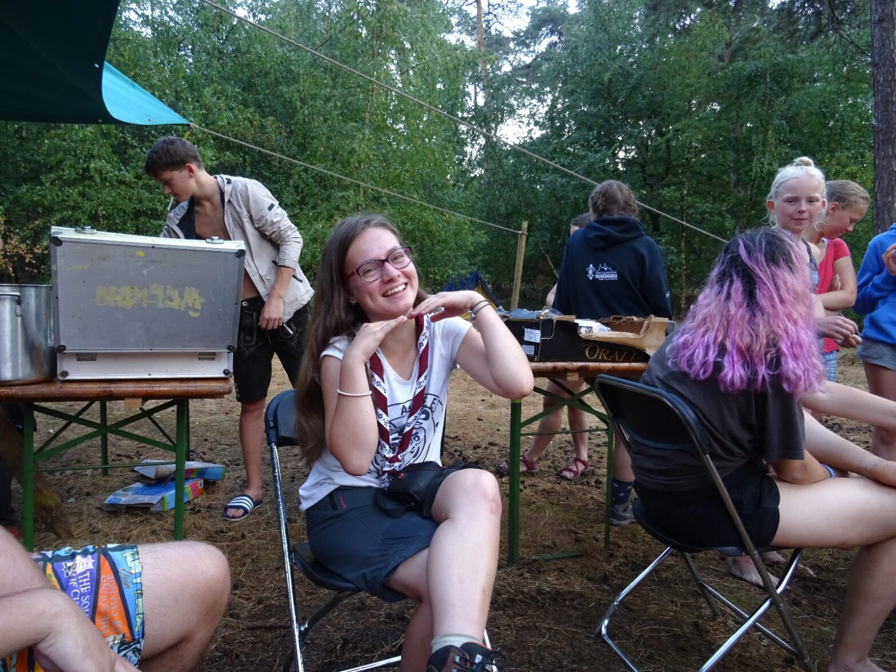
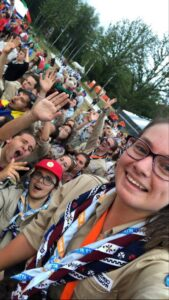
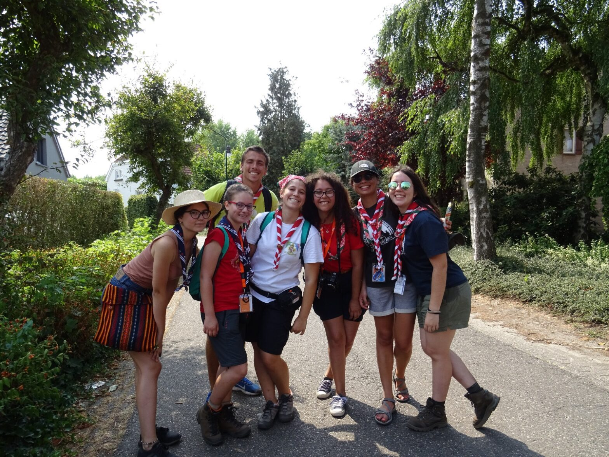

O melodie portugheză – Jurnal de amintiri #1

„Și mi-e atât de greu să scriu despre un singur moment frumos!”
Când stau să mă gândesc, parcă toată cercetășia mi-e dragă inimii, așa cu totul, cu părțile bune și părțile mai dificile deopotrivă. Însă, mă voi chinui puțin!
Așa că ne întoarcem în timp, dar nu prea mult. Sunt în Olanda, la Roverway.
E o seară caldă de vară, iar eu o petrec mergând cu o senioară spre râu. Totul e liniștit în jur, se aud murmure din locuri îndepărtate, muzică, forfotă, dar noi suntem acolo, mergând ușor. Începe un vânt lin, noi așezându-ne pe un ponton, să admirăm întunericul întins, întrerupt ici și colo de reflexia lunii, dar și a stelelor. Ne punem pe spate. Tot universul parcă e acolo, chiar așa pare. Ne ridicăm și pornim spre agitația continuă. Pe drum, dăm de o ghidă din Marea Britanie cu o pătură întinsă, plină de ecusoane de toate felurile. Îmi atrage atenția un ecuson cu cifra 10, pe care îl ridic plină de curiozitate. Ea îmi explică aproape robotic despre el, apoi îl așez cu grijă la loc și observ că prietena mea mă așteaptă nerăbdătoare să mergem mai departe. Se face 12 noaptea, iar mare parte din cercetași au mers deja la culcare.
Aproape de nicăieri, dăm de 3 cercetași din Tulcea, cu care ne tot întâlnim în fiecare seară întâmplător, în campul acela cu 4.500 de oameni. Așa că, deja nu ni se mai pare surprinzător.

-cercetașa noastră Scrio alături de câțiva dintre noii săi prieteni-
Ne ducem împreună spre un cort mare, unde se vede multă mișcare, dar nu se aude mare lucru. Când dăm să intrăm, aflăm că este un silent party, practic o petrecere unde fiecare cercetaș primește o pereche de căști, iar muzica numai de acolo vine. Intrăm și vedem în fața ochilor foarte mulți oameni, printre care recunosc eu trei prieteni din Portugalia. Ne apropiem și îi salutăm, apoi începem să dansăm aproape stângaci, fiecare pe melodia lui. Nu-mi dau seama când trece timpul. Tulcenii noștri se fac nevăzuți. Acum începe un mare șir de oameni, care dansează pe o melodie portugheză foarte cunoscută…apoi încă o melodie portugheză….și încă una, două, trei. Până rămânem acolo un cort mare plin de portughezi și….noi! Două românce puse pe distracție și fără somn.
Pur și simplu am dansat, am cântat și m-am distrat așa de tare! Am învățat câteva dansuri tradiționale portugheze, am glumit. Și nu am făcut poze, totul se derulează încă în memoria mea, ca un film.

Atât de drag sufletului meu e să revăd acum, peste aproape 2 ani de atunci momentele astea în minte….
Poate nu este neapărat cel mai frumos, dar a fost prima dată când am simțit pe pielea mea cercetășia la nivel global. Și știu cât de important e, pentru că mi se face pielea de găină când mă gândesc! Aşa de bucuroasă mă face!
Scrio, explo